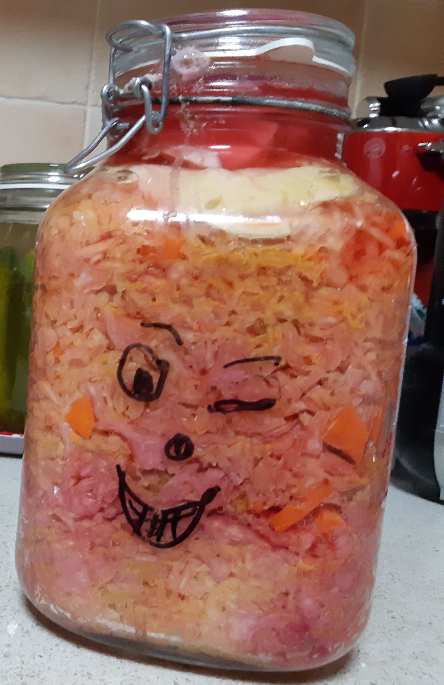
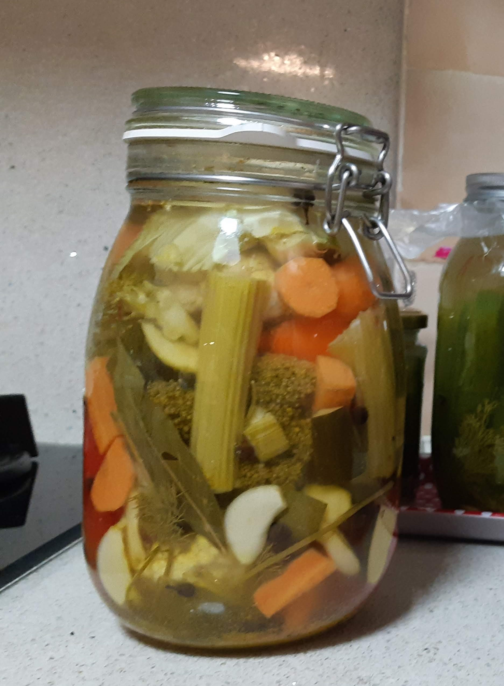
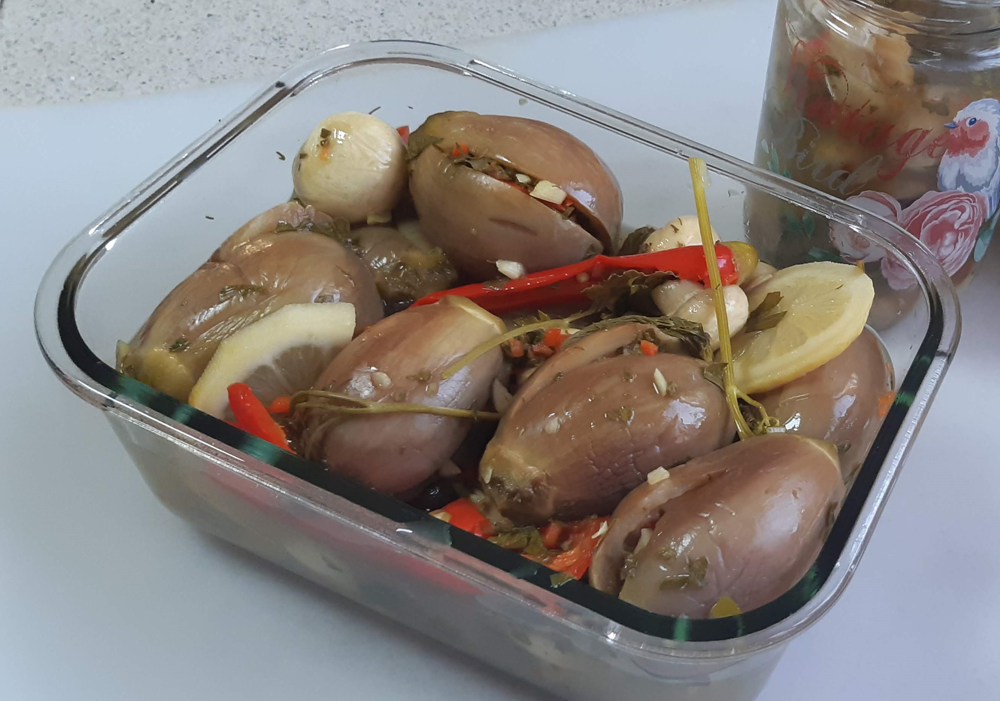
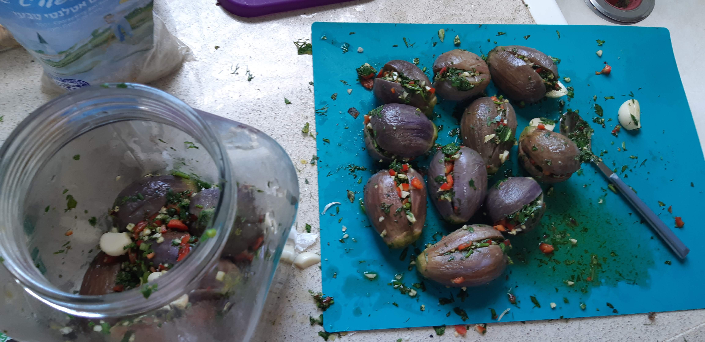
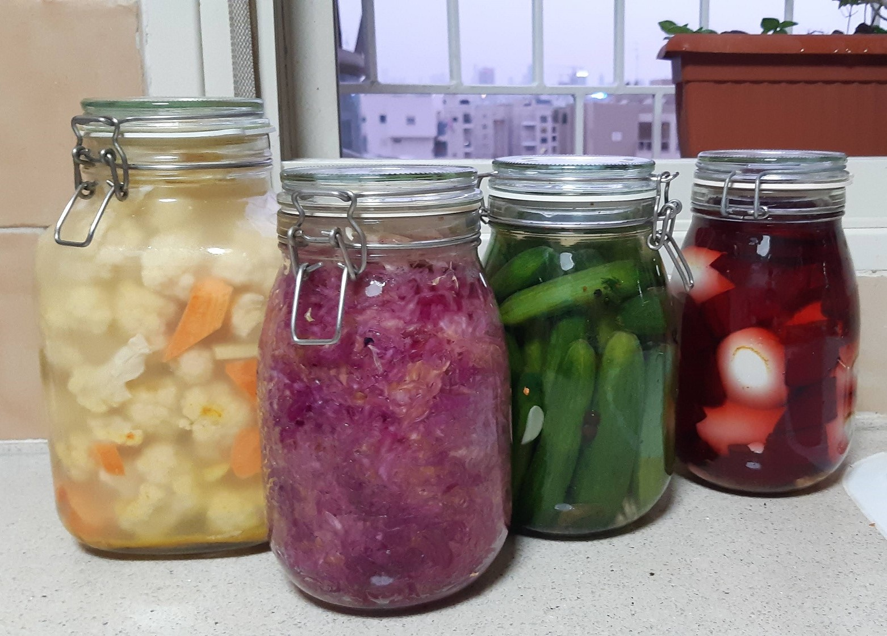

Pickles
Definitely not an obvious thing, |
Definitely not an obvious thing, |
| Sparkling Pickled Watermelon | Sparkling Pickled Cucomber |
 Eggplant ...fresh, Jar just been closed |
 cabbage |
 Vegtabel Mix |
|  Eggplant |
 Pripring the Eggplant |
 Yes that is sprouted lentils |
|  Cauliflower, cabbage, cucumber, eggs in beets |
 Egg in beetroot's salty water |
cabbage |